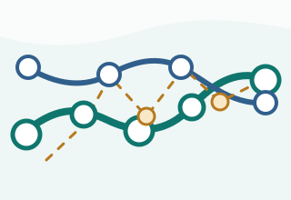

Dataset size
0 materials
0 categories

本地材料数据库 + AI
MatFinder AI Copilot
AI 材料分析
点击材料的详情按钮，从本地数据集生成 OpenAI 分析。
没有匹配的材料。
Material comparison
Use the Compare buttons in the material cards, then review the property table below.
材料对比
AI 材料对比
添加两种材料进行对比，即可基于本地数据集生成 GPT 对比。
About MatFinder AI
MatFinder AI helps teams translate product requirements into material candidates using a local SQLite dataset, a transparent scoring engine, and optional OpenAI-backed explanations.
0 materials
0 categories
The engine parses Chinese and English requirements, detects performance needs, scores each material, and explains matched reasons and limitations.
Scores summarize how well each material matches the detected requirements, with reasons and warnings shown beside every recommendation.